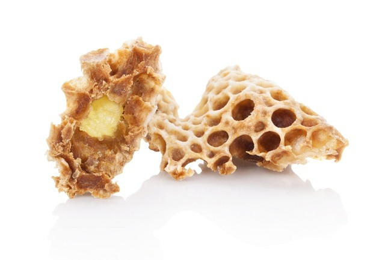

Herbal untuk Kecerdasan Otak Anak
Beberapa tanaman herbal diketahui memiliki potensi untuk mendukung perkembangan otak dan kemampuan kognitif si Kecil.
Berikut penjelasannya:
1. Ginkgo Biloba
Ginkgo biloba mengandung senyawa flavonoid dan terpenoid yang diyakini bermanfaat bagi fungsi kognitif. Flavonoid berperan sebagai antioksidan yang menangkal radikal bebas, sedangkan terpenoid membantu melancarkan aliran darah ke otak sehingga meningkatkan pasokan oksigen dan nutrisi. Meski begitu, hingga kini belum ada bukti ilmiah yang cukup kuat mengenai efektivitas ginkgo biloba pada anak-anak. Penelitian lebih lanjut masih dibutuhkan.
2. Ginseng
Ginseng mengandung zat aktif ginsenosida yang diduga mampu meningkatkan kinerja otak, terutama dalam hal memori dan konsentrasi. Studi dalam jurnal Phytotherapy Research menunjukkan bahwa ginseng dapat mendukung fungsi kognitif, namun riset tersebut umumnya dilakukan pada orang dewasa. Karena itu, efeknya pada anak masih perlu dikaji lebih lanjut.
3. Rosemary
Aroma minyak esensial dari rosemary dilaporkan bisa meningkatkan daya ingat dan fungsi otak pada anak usia sekolah, sebagaimana tercantum dalam penelitian di jurnal Advances in Chemical Engineering and Science. Kandungan utama rosemary, yaitu 1,8 cineole, memengaruhi kerja neurotransmitter, yang penting dalam proses belajar dan konsentrasi. Selain itu, senyawa lain seperti asam karnosik dan asam rosmarinat memiliki sifat anti-inflamasi dan antioksidan yang membantu melindungi sel otak. Namun, riset lanjutan tetap diperlukan untuk memastikan manfaat dan keamanannya dalam jangka panjang.
4. Royal Jelly
Produk lebah ini mengandung asam lemak unik bernama 10-HDA (10-hydroxy-2-decenoic acid), yang berpotensi membantu memperbaiki dan menjaga fungsi otak. Meski menjanjikan, penelitian seputar royal jelly umumnya masih terbatas pada orang dewasa. Oleh karena itu, manfaatnya bagi perkembangan otak anak masih perlu dibuktikan secara ilmiah.
5. Sage
Daun sage memiliki kandungan aktif seperti polifenol, flavonoid, dan terpenoid yang bisa mendukung fungsi otak. Senyawa ini bekerja dengan cara mengurangi peradangan, menekan stres oksidatif, serta meningkatkan aktivitas neurotransmitter yang penting dalam perkembangan kognitif anak. Meski begitu, riset lebih dalam masih diperlukan untuk memastikan keamanan dan manfaat penggunaannya bagi anak-anak.